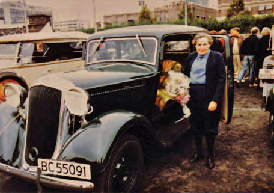

Irma Kept the Car!
By: Jim Benjaminson
Irma Darre-brandt was an intensely private woman, elusive to the point of shunning every form of publicity. born the second oldest of four daughters to a high-ranking Norwegian naval officer on May 30, 1909, Irma became, at age 24, the first Norwegian female to enter the Monte Carlo Rally. As she joined its 13th running in 1934, her place in history was guaranteed.

No stranger to competitive automotive events, Irma, who learned to drive behind the wheel of a Model T Ford, participated in gymkhanas and rallies, driving her next car, a Model A. Prior to entering the Monte Carlo Rally, Irma was "put to the test" by her father as he sought to guarantee that his daughter was up the arduous task of competing in Europe's premier road rally. Sent into the forest, she spent four days and four nights without sleep as she transported lumber with a sled and horse. Her father would sneak out into the woods during the wee hours of the morning to see if he could catch her napping, but each time she passed the test.
Deeming that her Model A was "not competitive, particularly in light of the front suspension system," Irma chose a '33 Plymouth coach. Irma's mother saw to the delivery of the car that her daughter would use in the rally and got it registered for road use and entered it into the rally. An early PC-series 1933 Plymouth, the car featured Plymouth's first six-cylinder engine since its introduction in July of 1928. Displacing 189.8 cubic inches, the power plant was rated at 70 horsepower. When asked why she chose the car, Irma replied "the Plymouth two-door was a good and sporty looking car. The wheels and tires had good practical dimensions (and it has) hydraulic four-wheel bakes, a six-cylinder engine, four leaf springs and a low-gravity point."
Irma's car was shipped from Detroit as a completely built-up car (Norwegian assembly of knocked-down cars at a plant at Kambo-Moss wouldn't begin until 1937). A new car was deemed a must for the rally "because we were opening for full throttle towards Monte Carlo the moment the starter let the flag up," Irma stated.
Only minor modifications were allowed to be made to the car to prepare it for its journey to the Monaco capitol. A driver for a French automobile company locked the leaf springs to curtail their travel, although an extra leaf was added to the springs to make them stiffer. Under the hood, the distributor was replaced with a magneto obtained from a Swiss firm. Otherwise, the car was bone stock. Surprisingly, Irma's car was equipped with wood, rather than wire, wheels.
A timed touring event, the Monte Carlo Rally permitted drivers to choose their own starting points and routes to the Monaco capitol. The only speed that counted in the rally was the scheduled average maintained by all competitors. The average speed had to be maintained day and night - including all stops for sleep, repairs and refreshment - over country roads and through cities and towns. At control points established in town's enroute, rally crews were required to check in on time!
Surviving two thousand miles of torturous roads from Norway, Irma brought the Plymouth safely into Monte Carlo. There the cars were placed in a closed yard prior to the final test of a driver's skills: a race through the city streets (mostly along the same route used today in the Monte Carlo Gran Prix). It was here that Irma lost her bid for the ladies Cup as she ran headlong into "French chauvinism." on the final day of the rally; competing cars were pushed from the storage yard and lined up along one side of the street, with the drivers lining up on the opposite side. As the starter's flag went up, drivers sprinted across the street - Le Mans style - opened the doors, climbed in, started their cars and raced through the city.
Irma's Plymouth started immediately but she found that the hand brake had been set so hard that she was unable to release it. Sliding to the center of the car, Irma placed one leg on either side of the parking brake lever, grasped it with both hands and finally pulled it back far enough for it to release. By the time she left the parking area, all the competitors were well on their way. Despite an outstanding performance at the wheel, Irma was unable to catch up.
Irma returned for the 1935 Rally - this time at the wheel of a 1934 Plymouth - as driver for a contingent of four Norwegian women. Including Irma's friend and competitor Lina Christiansen (the '34 Plymouth belonged to Lina), else Castberg and Borghild Bieltvedt, the quartet pulled out of Stavanger, Norway, on January 19th. (It should be noted that there were two car categories: large cars and light cars. Drivers of "large" cars were required to carry a total of four people or two people with weight ballast to equal four passengers while "light" cars had to carry two people. Beginning with the 1935 Monte Carlo Rally the distance driven dictated how many points could be earned in determining the winner. The starting points of Stavanger, Norway, Palermo, Italy, or Athens, Greece, could earn a driver the maximum 1,000 points.

Drivers starting from Le Mans, France, or Amsterdam could only hope for a maximum 950 points. Once at Monte Carlo, contestants faced other contests, including an acceleration test, a braking test and a starting from-cold test (the cars had to be parked overnight after arrival for this part of the competition) could earn drivers more points to determine their final standings. Cars were also examined for damage such as smashed fenders, broken lamps, etc., any of which would reduce the contestants' points total. At stake was a purse of 50,000 francs (about $3,500 in 1935 U.S. currency) and the international sporting Cup for first place. Second place was 20,000 francs and a silver plaque and lesser prizes went to the next eight finishers. Of 170 cars entered in the rally (42 built in the United States), only 107 made it to the finish line.
At the end of this rally, Irma had earned 1060.3 points, just 12.7 points from first place in the general Classification and 8.2 points from first place for the Ladies Cup. EDUCATED AS AN AGRONOMIST, Irma retired from rally racing to concentrate on running the family farm situated on land that has a written history dating back to the year 1030!
From her youngest days Irma was placed in charge of the farm's harvesting and lumbering operations. Always interested in modern machinery, Irma prided herself in having the newest and largest tractors available in the country. "I grew up at a time when horses were gradually replaced by machinery," she wrote. Her first tractor was an international Mogul imported from the United States. This was replaced by a McCormick-Deering in 1930 and she could lay claim to having purchased the first Allis-Chalmers Model 40 All Crop harvester with bagging attachment that was imported into the country.
Still, Irma had a soft spot in her heart for the '33 Plymouth. The car remained in her possession until the Nazis occupied Norway in April of 1940.
As storm troopers invaded the country, they confiscated motor vehicles of all sorts for military use. Knowing the Nazis would soon "requisition" the Plymouth, Irma put a bold plan into effect. "Through the 'jungle grapevine' I was told the Germans would requisition or confiscate my Plymouth. I placed the car outside my office window and had the wheels, starter, coil, ignition head (distributor), fan belt, front lights, battery and various others parts removed from the car. When two German officers came to register the Plymouth, they asked why the wheels were taken off, as this would complicate the transportation. I told them that the car was not operable. The children had gotten it to play with and in order to make it safe for the children; the wheels had been taken off. One of the German officers said they would be back later and then the wheels should be on the car. I answered I would try."
Irma's two-year-old nephew was told what had transpired with the Nazi officers. When the Germans returned they demanded to know why the wheels hadn't been put back on the car. At this point the youngster climbed behind the wheel and showed them that it was "his job to drive the car." the young boy made sounds like a motor running while turning the steering wheel back and forth. Looking the car over closely while watching the youngster behind the wheel, the soldiers left the car, muttering "the children could keep the car."
Irma was not alone in preventing the Germans from succeeding in confiscating vehicles. The Norwegian Chrysler assembly plant successfully hid a barn full of new cars whose existence did not become known for several years until after the barn caught fire and burned to the ground, leaving the charred hulks as evidence. Arve Wiborg (without whose assistance this story could not have been told) father's Norwegian built '39 Plymouth was confiscated, never to be seen again.

After the war Irma's Plymouth never again saw regular use. it sat outside for many years and then was moved into a storage shed early in the 1950s. Irma's neighbor, Ole Hafsten, who knew of the car's existence, urged her to have the car restored as the 50th anniversary of her first Monte Carlo Rally competition was approaching. By 1982, when the decision was made to restore the car, moisture had taken its toll on the body, rust having eaten away the lower body and most of the floor pan.
Undertaking the restoration project was Norway's best professional body builder, Terje Torgerstuen. Over 500 hours of work went into the body alone. Both front fenders had been removed from the car and discarded. An NOS left front fender was located in Stockholm, Sweden, but the right front fender and both running boards had to be fabricated from scratch.

The original wheels, which had been removed to foil the Nazis, had long since been lost. Replacements were located in Maine but had not arrived in time when these pictures were taken as the car made its appearance fifty years after first participating in the Monte Carlo Rally. Two hundred hours went in to the mechanical restoration under the skillful hands of Per Johansen. then the car was towed three hundred miles to have the upholstery completed by specialist K. O. Habostad.
As restoration neared completion, preparations were made to re-register the car which had originally carried plate number C-13091. Irma had turned the plates in prior to World War two. Over the ensuing years the Norwegian registration system had been changed so the car's original plates were no longer available. in its place a new registration number, BC-55091, was as close to the original number as could be obtained.
Although Irma's personal vehicle at the time of this writing was a Volvo (she did have a small Japanese import for a while), Irma was very fond of the 1933 Plymouth. Fifty years after setting forth on her first Monte Carlo Rally, Irma debuted the car at the Norwegian Veteran and Vintage Car Club Rally. Fifty years and counting… Irma kept the car!
Irma Darre-Brandt and her '33 were featured as the cover story of Bulletin 173. She died at her farm home in Norway on March 26, 2003, At the age of 93 (BULLETIN 258).